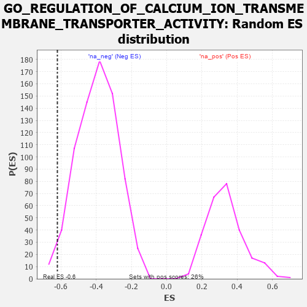

| | | Dataset | 7d |
| Phenotype | NoPhenotypeAvailable |
| Upregulated in class | na_neg |
| GeneSet | GO_REGULATION_OF_CALCIUM_ION_TRANSMEMBRANE_TRANSPORTER_ACTIVITY |
| Enrichment Score (ES) | -0.62085694 |
| Normalized Enrichment Score (NES) | -1.5745857 |
| Nominal p-value | 0.02425876 |
| FDR q-value | 0.116965495 |
| FWER p-Value | 1.0 |
Table: GSEA Results Summary
 Fig 1: Enrichment plot: GO_REGULATION_OF_CALCIUM_ION_TRANSMEMBRANE_TRANSPORTER_ACTIVITY
Fig 1: Enrichment plot: GO_REGULATION_OF_CALCIUM_ION_TRANSMEMBRANE_TRANSPORTER_ACTIVITY
Profile of the Running ES Score & Positions of GeneSet Members on the Rank Ordered List
| PROBE | GENE SYMBOL | GENE_TITLE | RANK IN GENE LIST | RANK METRIC SCORE | RUNNING ES | CORE ENRICHMENT | | 1 | THADA | | | 253 | 0.931 | 0.0224 | No |
| 2 | JPH1 | | | 1741 | 0.347 | -0.1444 | No |
| 3 | FMR1 | | | 1816 | 0.334 | -0.1342 | No |
| 4 | CDK5 | | | 3480 | 0.080 | -0.3386 | No |
| 5 | PDE4B | | | 4089 | -0.022 | -0.4138 | No |
| 6 | STAC | | | 4327 | -0.064 | -0.4399 | No |
| 7 | JPH3 | | | 4481 | -0.091 | -0.4538 | No |
| 8 | MYO5A | | | 4787 | -0.155 | -0.4831 | No |
| 9 | DRD2 | | | 5088 | -0.221 | -0.5079 | No |
| 10 | STAC2 | | | 5987 | -0.466 | -0.5937 | Yes |
| 11 | STIM1 | | | 6169 | -0.528 | -0.5857 | Yes |
| 12 | RGN | | | 6233 | -0.547 | -0.5617 | Yes |
| 13 | DYSF | | | 6481 | -0.654 | -0.5547 | Yes |
| 14 | REM1 | | | 6530 | -0.676 | -0.5213 | Yes |
| 15 | ANK2 | | | 7298 | -1.170 | -0.5496 | Yes |
| 16 | CALM1 | | | 7567 | -1.499 | -0.4960 | Yes |
| 17 | PDE4D | | | 7764 | -1.944 | -0.4074 | Yes |
| 18 | PKD2 | | | 7822 | -2.167 | -0.2882 | Yes |
| 19 | CALM3 | | | 7869 | -2.525 | -0.1469 | Yes |
| 20 | CAV3 | | | 7896 | -2.739 | 0.0094 | Yes |
Table: GSEA details [plain text format]

Fig 2: GO_REGULATION_OF_CALCIUM_ION_TRANSMEMBRANE_TRANSPORTER_ACTIVITY: Random ES distribution
Gene set null distribution of ES for GO_REGULATION_OF_CALCIUM_ION_TRANSMEMBRANE_TRANSPORTER_ACTIVITY